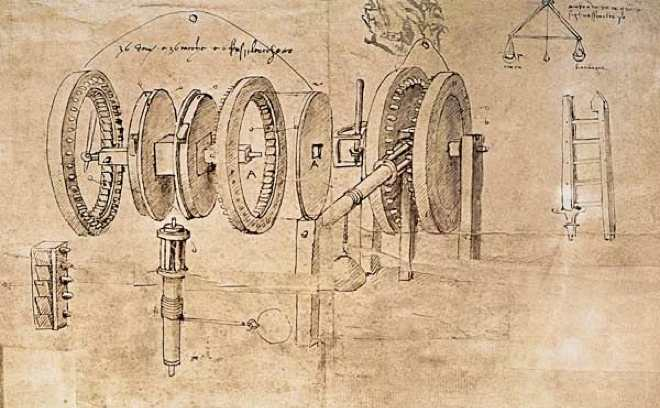
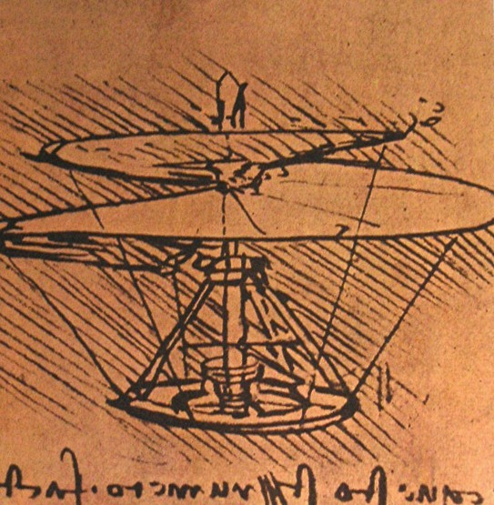
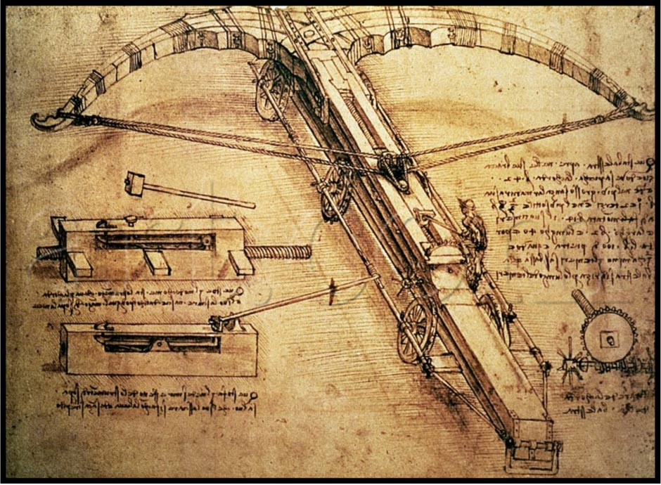

Inventions
DA VINCI'S MACHINES
With the same rational and analytical approach that moved him to represent the human body and to investigate anatomy, Leonardo studied and designed a bewildering number of machines and devices.
INVENTION REPRITIORE
During his lifetime, Leonardo was also valued as an engineer. With the same rational and analytical approach that moved him to represent the human body and to investigate anatomy, Leonardo studied and designed a bewildering number of machines and devices. He drew their “anatomy” with unparalleled mastery, producing the first form of the modern technical drawing, including a perfected "exploded view" technique, to represent internal components. Those studies and projects collected in his codices fill more than 5,000 pages. In a letter of 1482 to the lord of Milan Ludovico il Moro, he wrote that he could create all sorts of machines both for the protection of a city and for siege. When he fled from Milan to Venice in 1499, he found employment as an engineer and devised a system of moveable barricades to protect the city from attack. In 1502, he created a scheme for diverting the flow of the Arno river, a project on which Niccolò Machiavelli also worked. He continued to contemplate the canalization of Lombardy's plains while in Louis XII's company and of the Loire and its tributaries in the company of Francis I.[166] Leonardo's journals include a vast number of inventions, both practical and impractical. They include musical instruments, a mechanical knight, hydraulic pumps, reversible crank mechanisms, finned mortar shells, and a steam cannon.

ARIEL SCREW
MANUSCRIPT B, FOLIO 83V (1489)
Leonardo describes the function of the drawing on folio 83v of Manuscript B (preserved in the Institut de France in Paris). It’s not actually a helicopter but an experiment with an aerial “screw”. The experiment Leonardo proposes here is aimed at verifying that air is a fluid that can be pressed and “leaned on” in order to push oneself up in flight. If this were indeed the case, one could also make a “screw” spin, raising itself up by pushing the air down. Leonardo was probably well aware of the maple seed that “goes into a spin” when it falls through the air because of its geometric shape. His idea of making a flying machine in the shape of a screw came from his careful observation of nature and his knowledge of mechanics and geometry. However, this machine only functions for a short time. After lifting off, the structure could not continue to spin because it would not have any support against which to press.
Leonardo supplies the clues for how to interpret this design by writing in his traditional mirror-like way on folio 83v of Manuscript B:
“The external edge of the aerial screw is a thick wire with a maximum radius of about four meters (13 feet). To make this instrument correctly, you would need to use starched-linen cloth so the air does not pass through. If it is rotated quickly, this machine will spin as though it were a screw that penetrates the air and it will rise. To understand how this is possible, hold a drawing ruler in your hand and move it quickly sideways in the air, and you will feel how the ruler is pushed in the direction of the edge, going up or down”.
The aerial screw is therefore propelled by a spring, which the operators must wind clockwise. Once it has reached maximum tension, the spring has enough energy to make the screw spin rapidly and forcefully in a counterclockwise direction. It is released from its base and takes flight for a few seconds.

Atlantic Codex (1488–1489) (Crossbow)
Leonardo's crossbow is a type of shooting weapon designed by Leonardo da Vinci, whose drawings are in the Codex Atlanticus. Never constructed by its designer, it was instead built to a scale of 1:1, as shown in the ITN documentary Leonardo's Dream Machines, which was aired for the first time in February 2003 by Channel 4.[2] The original idea of Leonardo, as described in the drawings of the Atlantic Codex (1488–1489), was to build a giant crossbow in order to increase the range of the dart. It was used to fire rocks and bombs, it was mostly intimidation based. The bow was made up of thin wood, on 6 wheels, 27 yards across, and made up of 39 separate parts.
The creation of the design is linked to Ludovico Sforza, an Italian prince in the Renaissance era, who wanted to expand and advance both his military and the Milan region. To do so, he wanted to update the current treatise on military engineering by Roberto Valturio. Leonardo responded by writing Sforza a letter that included a number of innovative machine designs, one of which was the crossbow. Leonardo also highlighted in the letter his expertise in engineering, most likely having known that Sforza was wanting to hire military engineers at the time. [3]
While some believe that Leonardo designed the crossbow for his own amusement, the context around this design suggests the crossbow was intended to be a dangerous weapon that would greatly appeal to his employer: Ludovico Sforza. [4] Inspiration for such a weapon most likely stemmed from the fact that Leonardo grew up in Italy during the 15th century, which means he was a witness to the constant warfare between the many city-states in his area. Thus, Leonardo put extensive time and effort into designs that could both protect his fellow citizens and greatly harm the enemy. The crossbow supports this theory in that the intended enormous size of the weapon was meant to invoke fear and panic in its enemies to keep them away, but it would still have the capability to cause great damage and injury had it been constructed.
